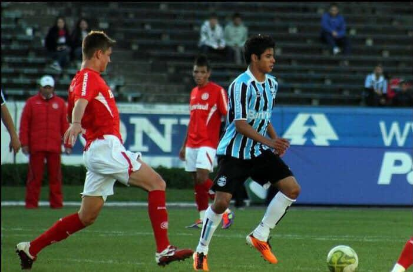
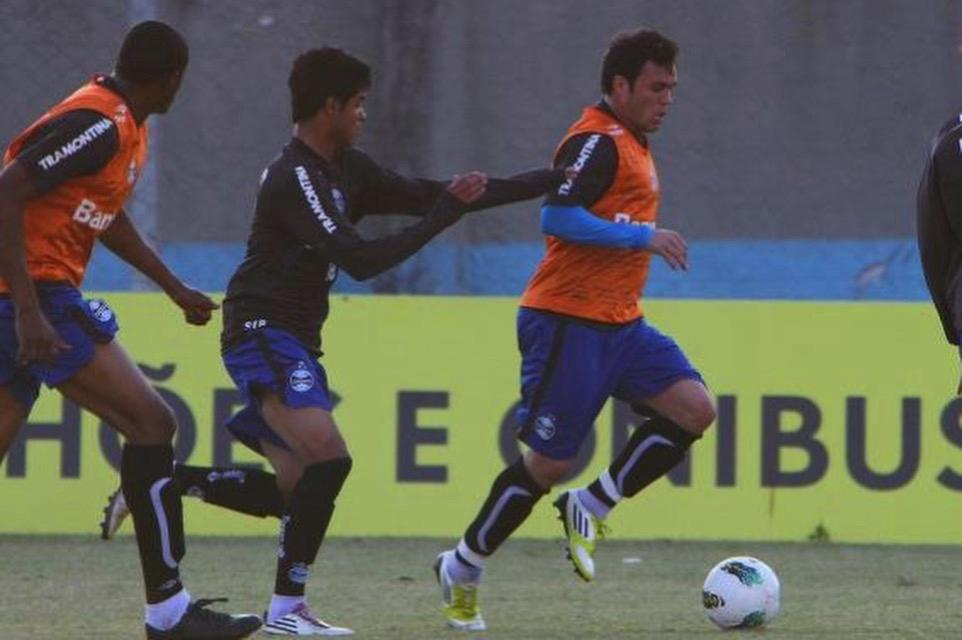
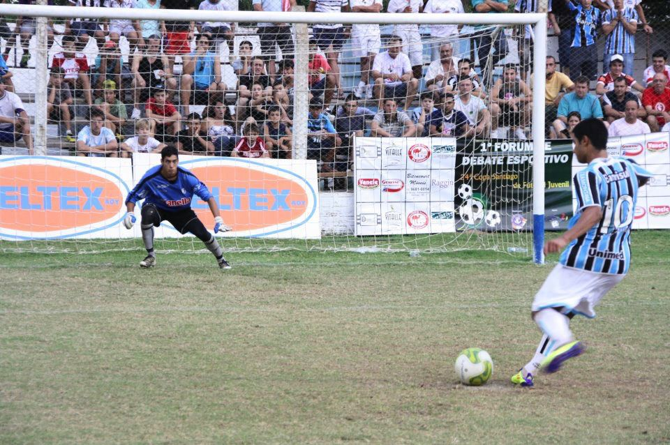
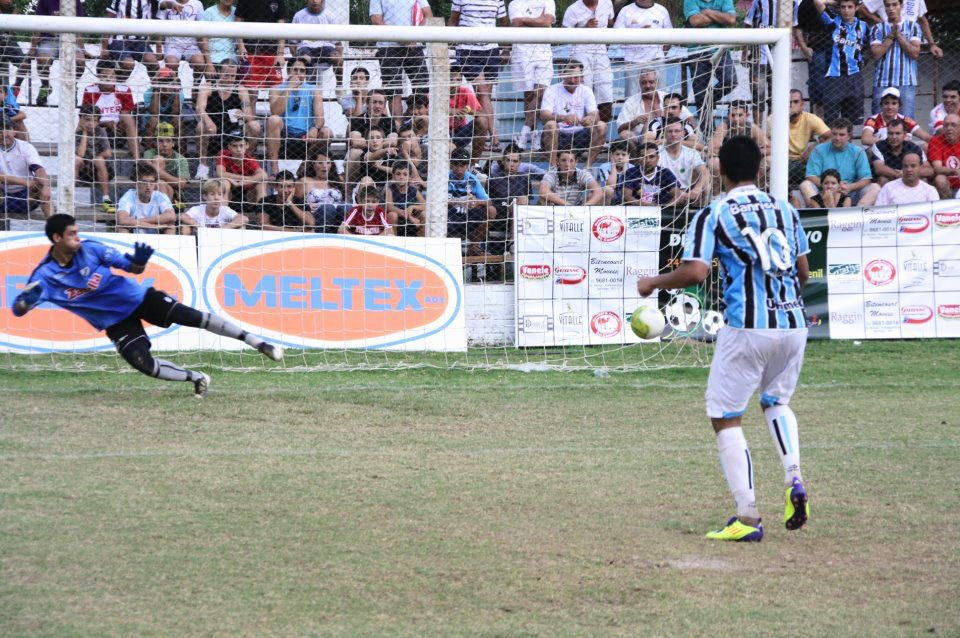
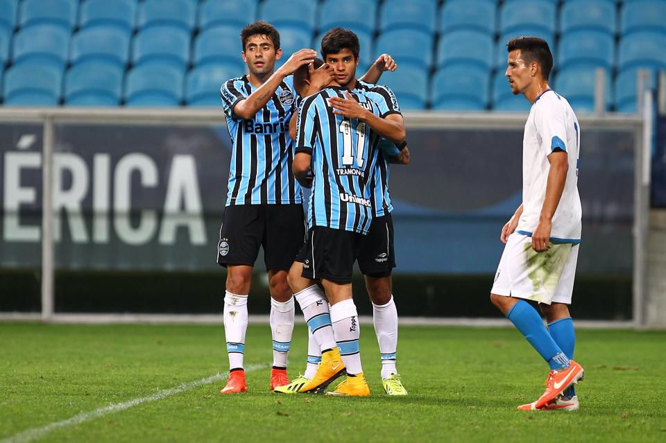
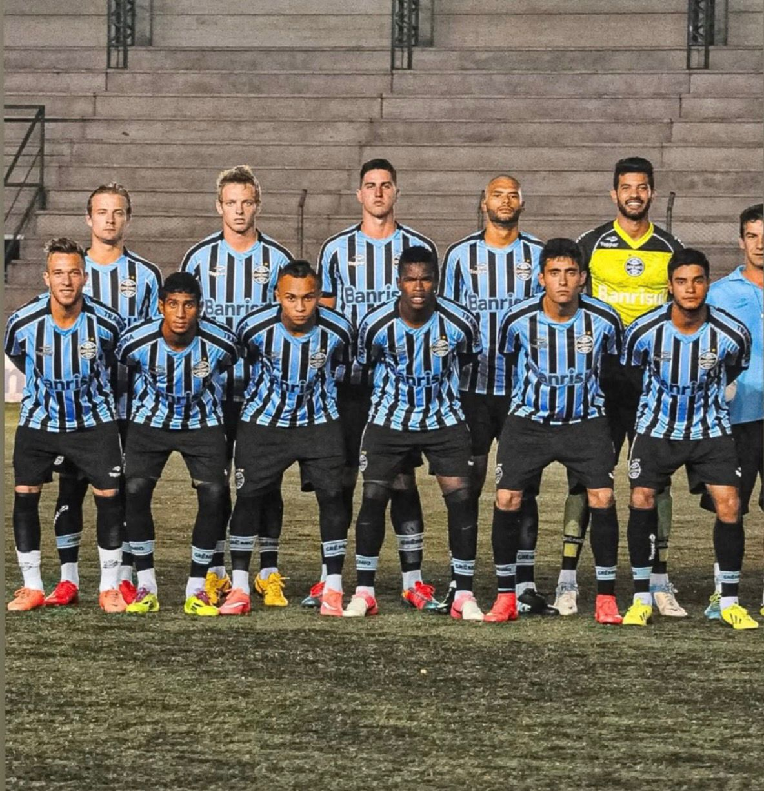
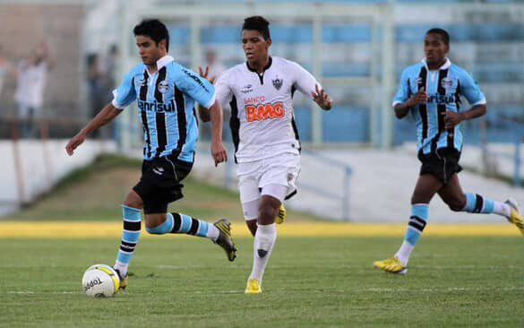
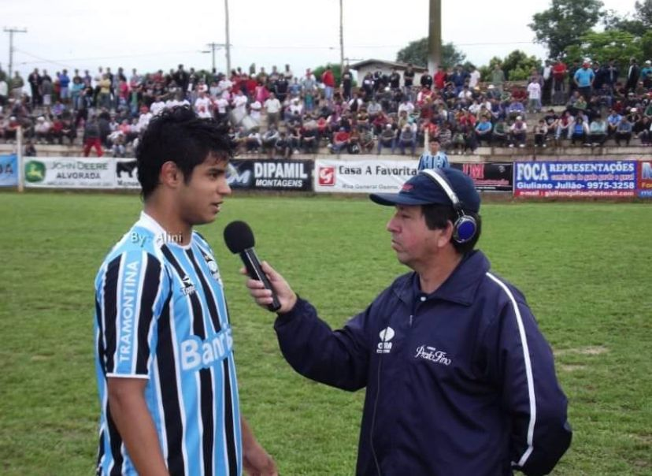

Galeria de Fotos
Clique nas fotos para ampliá-las







A Era no Grêmio FBPA
A trajetória de Lucas no clube gaúcho, da base ao time profissional.
Sonho Realizado no Olímpico e Arena
Chegar ao Grêmio Foot-Ball Porto Alegrense aos 17 anos foi um marco definitivo na vida de Lucas. Jogar nas categorias Sub-17 e Sub-20 de um gigante do futebol sul-americano lapidou não apenas sua técnica refinada e visão de jogo, mas também sua mentalidade de garra e dedicação. O Olímpico Monumental e a moderna Arena do Grêmio foram palcos de um aprendizado intenso sob a exigência de uma das torcidas mais apaixonadas do Brasil.
2011–2012 — Formação e Base
Lucas integrou os elencos Sub-17 e Sub-20 do Grêmio, disputando competições de base de altíssimo nível, como a Copa São Paulo de Futebol Júnior e o Campeonato Brasileiro Sub-20. Enfrentou as principais promessas do futebol nacional, consolidando-se como um meio-campista criativo e de muita técnica.
2013 — Estreia no Profissional
O momento mais aguardado ocorreu no Campeonato Gaúcho de 2013, quando Lucas fez sua estreia na equipe principal do tricolor gaúcho em partida contra o São Luiz de Ijuí. Sentir a pressão do futebol profissional foi a coroação de anos de dedicação na base.
2014 — Campeão Gaúcho Júnior
Em 2014, coroando seu ciclo na base gremista, Lucas ajudou a equipe a conquistar o título do Campeonato Gaúcho Júnior. Levantar essa taça em um dos maiores clubes do país consolidou sua passagem vitoriosa pelo Sul do Brasil.
"Vestir a camisa do Grêmio me ensinou o real significado de raça e dedicação no futebol. Essa mentalidade de buscar sempre a vitória é o que eu levo para a vida e transmito aos meus alunos hoje na Hattrick."